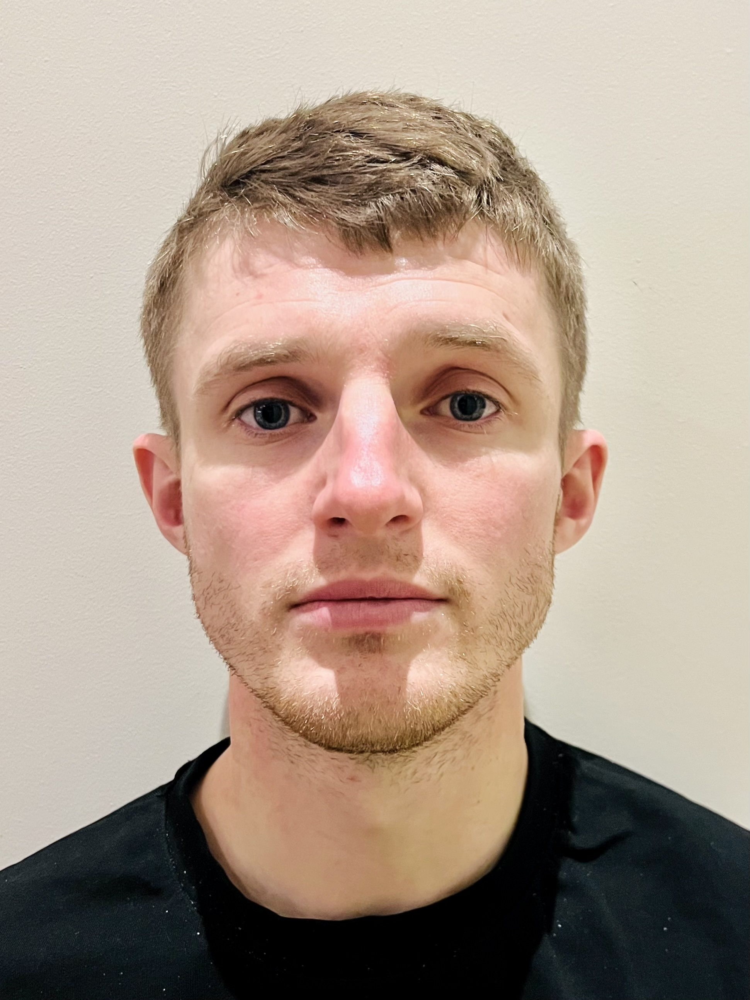

A telemetry system that collects and displays real-time data from a historic rally car. A Raspberry Pi acts as the central controller, interfacing with several sensors including a GPS module, a DS18B20 temperature sensor, a fuel level sender measured through an ADS1115, and BLE TPMS sensors. Data is processed and published to an MQTT broker locally and remotely. An in-car display and a Svelte web app visualise live data and vehicle location, enabling the co-driver, service team and spectators to monitor the car's status and improve safety.